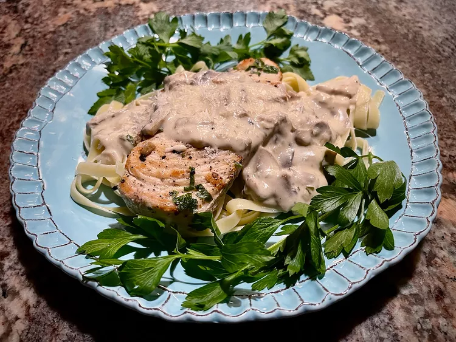

Chicken Mushroom Fettuccine

Description
Creamy Chicken Mushroom Fettuccine is elegant, but easy enough to pull together. Chicken cutlets and mushroom sauce cook in a single skillet, and are served over fettucine. It's a comforting meal with garlic bread and a simple green salad.
Ingredients
- 6 cutlet chicken breast cutlets (about 2 1/2 pounds total)
- salt and freshly ground pepper to taste
- 2 tablespoons olive oil, divided
- 1 tablespoon unsalted butter
- 8 ounces fresh mushrooms, cleaned and sliced
- 1/3 cup minced shallots
- 2 cloves garlic, minced
- 1/2 cup white wine
- 2 tablespoons minced fresh flat-leaf parsley
- 2 tablespoons all-purpose flour
- 1 3/4 cups half and half
- 1/2 cup grated freshly Parmesan cheese, divided
- 12 ounces fettuccine pasta
- additional flat-leaf parsley sprigs for garnish (optional)
Steps
- Step 1
- Pat cutlets dry with paper towels; season both sides with salt and pepper.
- Step 2
- Heat 1 tablespoon olive oil and butter in a large, nonstick skillet over medium heat. When hot, add seasoned cutlets and brown, 3 to 5 minutes per side. Remove cutlets to a plate and keep warm.
- Step 3
- To the same skillet, add 1 additional tablespoon olive oil, and stir in mushrooms. Cook 3 to 5 minutes, stirring occasionally, then add shallots and garlic, stirring constantly, about 30 seconds.
- Step 4
- Pour in wine, stir, and return chicken cutlets and any accumulated juices to the skillet. Cover, reduce heat, and cook chicken until juices no longer run pink and an instant read thermometer inserted near the center reads 165 degrees F (74 degrees C). Remove from heat, 8 to 10 minutes.
- Step 5
- Meanwhile, fill a large pot with lightly salted water and bring to a rolling boil. Cook fettuccine at a boil until tender yet firm to the bite, about 8 minutes.
- Step 6
- Whisk flour and 2 tablespoons water together in a small bowl to create a slurry. Gradually whisk in about 1/3 cup cooking liquid from the skillet. Return skillet to medium heat; stir in the slurry and half and half. Bring sauce to a boil, stirring frequently, until thickened, 3 to 5 minutes.
- Step 7
- Remove from heat again, and stir in 1/3 cup grated Parmesan and minced parsley. Stir until the cheese is melted. Taste the sauce and adjust salt and pepper, if necessary.
- Step 8
- Drain fettuccine; divide fettuccine and cutlets into 6 servings. Pour on sauce and garnish with remaining grated Parmesan and flat-leaf parsley sprigs, if using. Serve warm.